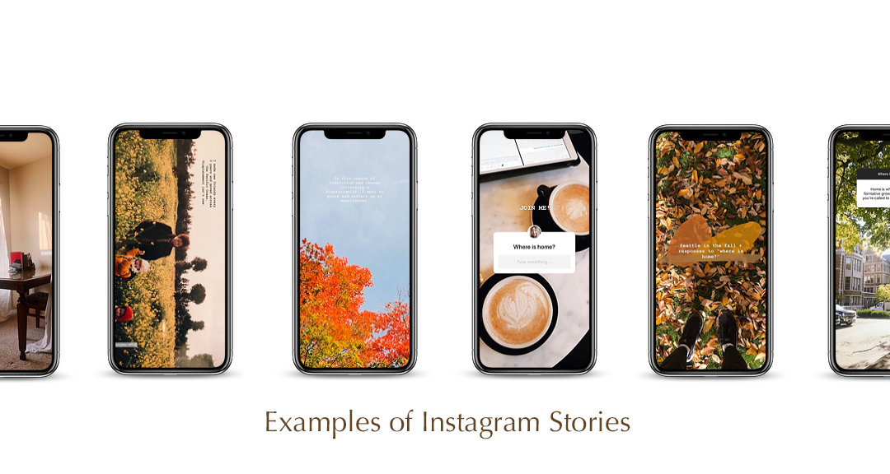
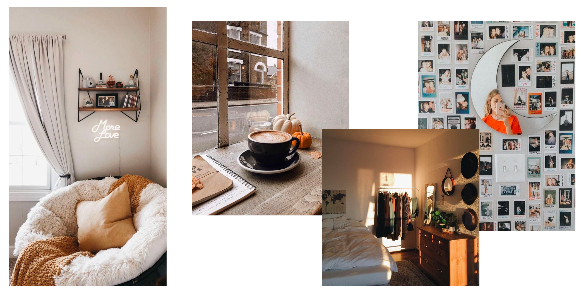
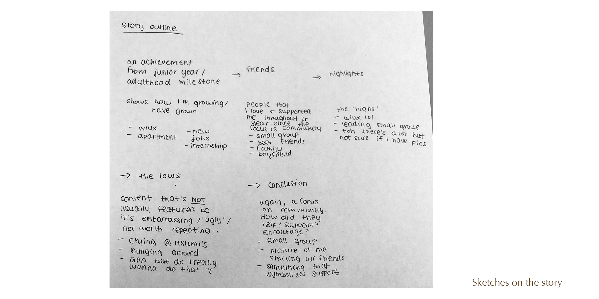
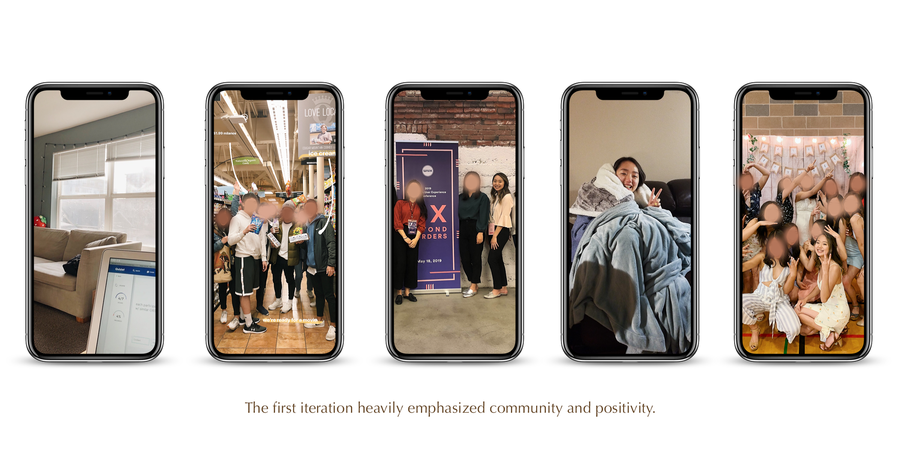
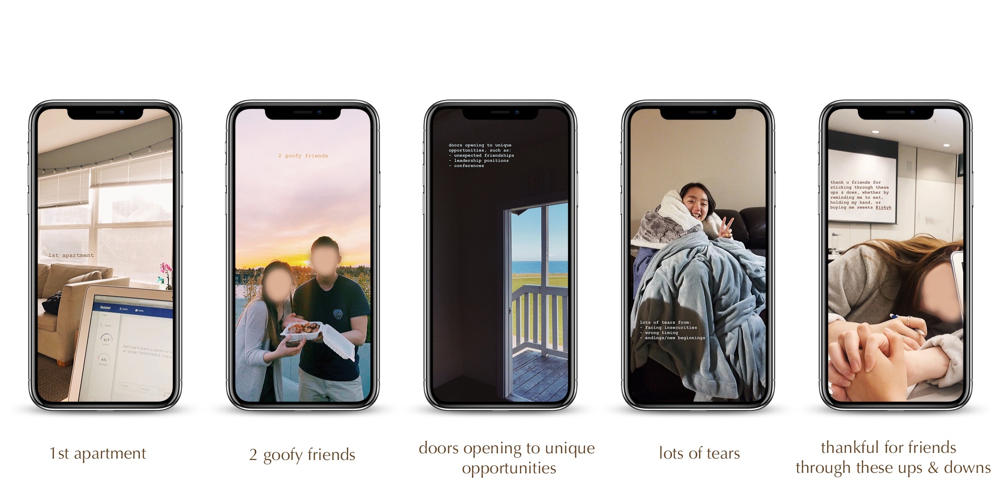

Storytelling through social media
Confronting Stigma of Failure Within the Asian American Community
Overview
The pressure to achieve the American Dream within the Asian American community leaves little room for disappointing loved ones and oneself. To address the stigma of failure, I shared on Instagram Stories how a detour in my life trajectory led to growth and resilience.
Context
6-weeks long
Personal project
Role
Storytelling

The challenge
encourage people on social media to view an issue differently
I chose Instagram, a visual application that allows its users to share moments through pictures and videos. My private account allows me to selectively choose who consumes my content, meaning that I can interact with a close group of friends. Instagram is also the 2nd most used social platform after Facebook, yet generates 4x more interactions through its Instagram Stories. Next, I researched issues my Instagram followers would view as relevant and problematic.
Understanding my Instagram users
The Research
+ Data Analysis
I analyzed my followers and discovered a few interesting insights:
- 90% are Asian American
- 67% identify as women
- 67% are friends from college. Out of this, 51% are from one student organization.

Based on these findings, I decided to create relevant content for Asian Americans in their early to mid-'20s.
+ Interviews
What topics are unaddressed within your Asian American community?
I asked 20 Instagrammers about their individual experience to gain insight without generalizing the Asian American population. This population is diverse - its composed of 20 countries in East and Southeast Asian and the Indian subcontinent. Among these diverse ethnic groups, a wealth and education divide persists today.
The most common topics was on the pressure to achieve the American Dream
+ Persona Spectrum
As an avid reader on Medium, I read an article on how personas are an average of attributes that we imagine an average customer to have. Persona spectrums are different - they acknowledge diversity, capabilities, and changing contexts. I took the physical and social context into account. A follower may be at home, in a car, library, on the bus, or out in the city. They may be surrounded by a crowd, alone, with coworkers, or family. Given these scenarios, I decided the content should:
- highlight key points
- be family friendly
- minimize rotating the screen from one story to the next
Brainstorming, Iterating...repeat
The Design Process
I decided to focus on my story to encourage my followers to trust and be vulnerable with me with their own. I brainstormed a list of stories:
- how I stayed up from testing anxiety
- going to cram school for a higher SAT score
- arguing with my dad on the definition of success
- how I faced an insecurity
- a life plan not working out
Inspiration
I looked at Pinterest for images that evoked a sense of comfort and warmth. While the pressure to succeed has been quite challenging, I have a positive outlook on it. I wanted my followers to understand that I grew and am dependable. These images helped me create a color scheme to my story.

As it was drawing towards the end of the year, I kept featuring people in my Instagram Story titled as a 'series'. These series had an average of 65% views, whereas my non-series were at 43%. While I'm not sure if the 15% increase is due to an algorithm, I decided to mimick what was working and mention how my friends were supporting and guiding me throughout my journey.
Iterations
I started with a general outline of my story and went through 2 design iterations before arriving at the final design. I showed the designs to my friends, who are also my followers, at each iteration to gain feedback.
The final product
An Instagram Story on Resilience



What I've learned and moving forward
Reflections
Throughout this project, I was worried about oversharing a piece of my life and it not being received favorably. Did I encourage people to reflect on the internal and external pressures in their life? Or was it not worth looking through all the photos? Because of my hesitation, I encapsulated a difficult experience into one photo and focused on the Asian American community.
I enjoyed the design aspect of this project and how it gave me an opportunity to incorporate my Sociology degree. But if I were to repeat this project again, I would ask design majors and UX designers to look over my iterations. Their technical expertise and insight will be extremely valuable in improving my project.